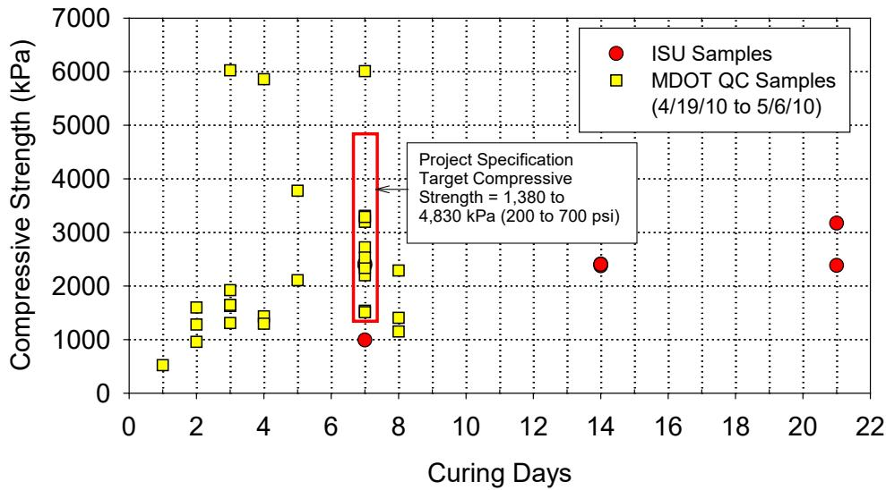
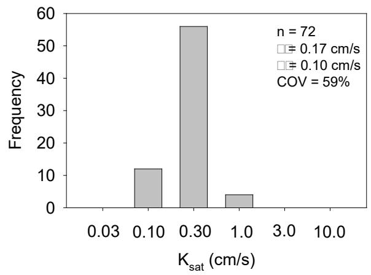
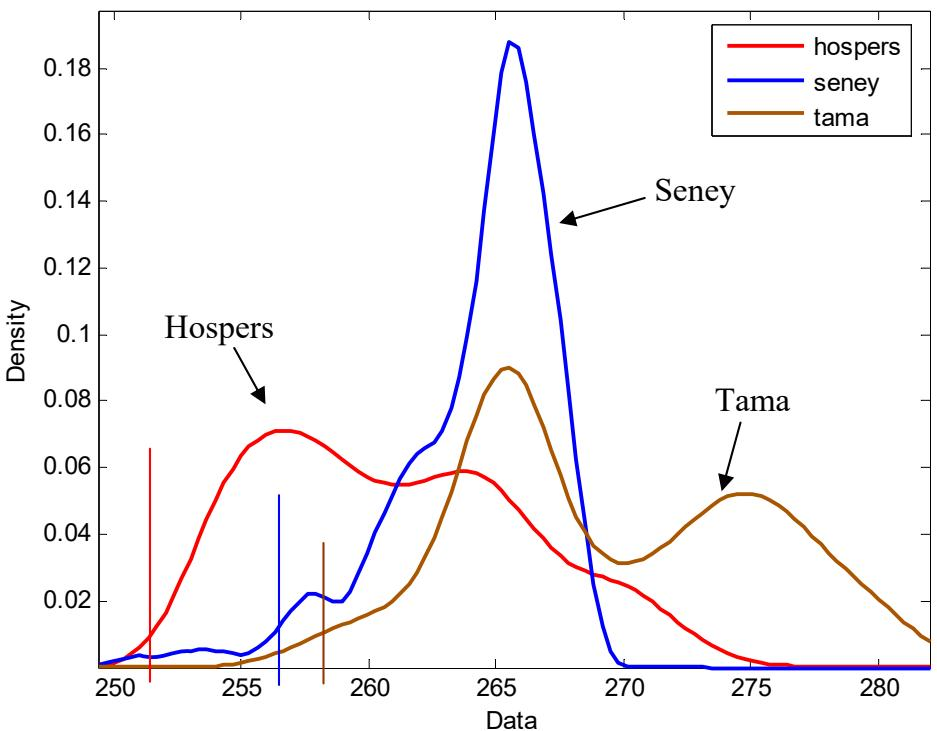
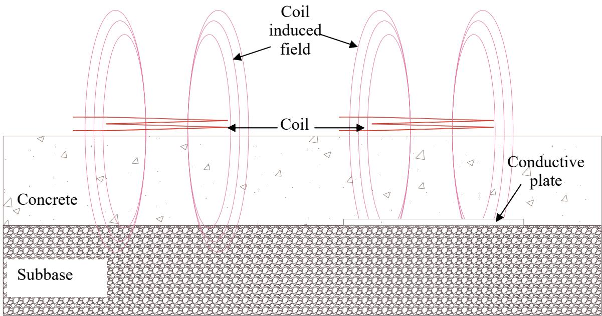
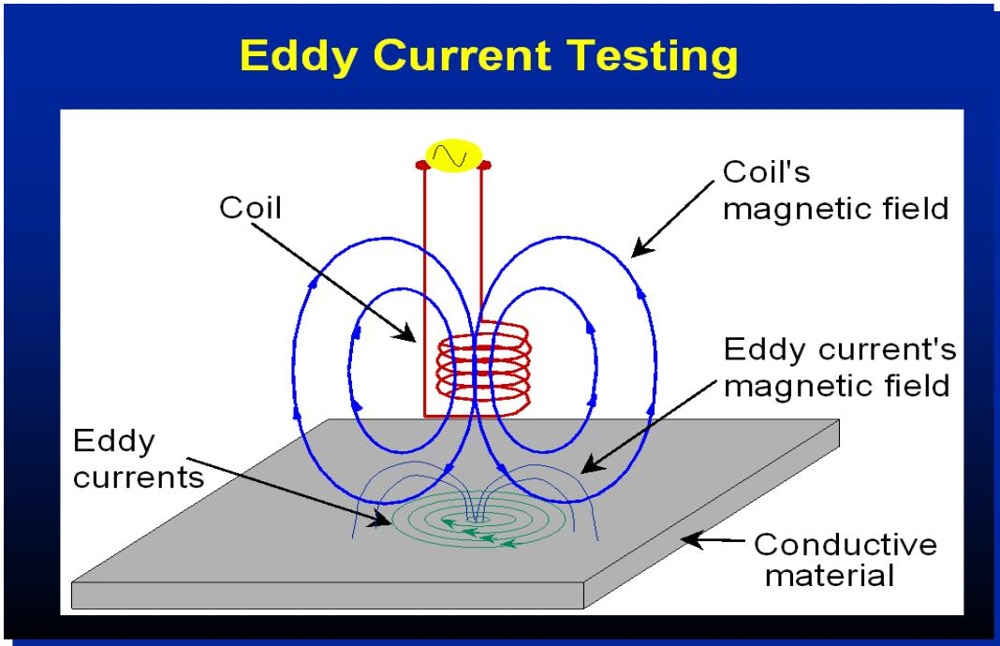

Quality Assurance & Field Testing
Quality assurance and field testing constitute a framework of analytical methodologies that deploy high-tech equipment directly to construction sites, bridging the gap between centralized laboratories and real-world jobsites. These techniques serve as fundamental tools for materials characterization by providing immediate data on chemical makeup, phase transitions, and physical properties without requiring traditional laboratory preparation [1]. Analytical mechanisms such as X-ray fluorescence enable rapid, non-destructive assessment of elemental composition by measuring characteristic secondary radiation emitted from excited solid materials [2]. Structural integrity is ensured through rigorous evaluation of dimensional uniformity, moving beyond simple average checks to account for both central tendency and dispersion in measured parameters [3]. Advanced non-destructive evaluation methods provide continuous spatial coverage rather than discrete spot checks, allowing for accurate assessment of variance and identification of areas falling below specified tolerances [3].
CP Tech Center reports covering “Quality Assurance & Field Testing” also include the following subtopics: MCO Suite of Tests, Nuclear Gauge, Portable X-Ray Fluorescence (XRF), and Thickness Index.
Quality Assurance & Field Testing unifies these methods by prioritizing real-time verification and strict adherence to design specifications across the construction lifecycle. MCO Suite of Tests ensures construction compliance by deploying high-tech analytical methodologies directly to jobsites for real-time verification of concrete properties across mix design, verification, and construction stages. Nuclear Gauge enables immediate in-situ verification of soil density and moisture content to ensure construction materials meet specified performance standards before approval. Portable X-Ray Fluorescence (XRF) enables nondestructive verification of elemental composition and mix proportions to ensure construction materials comply with design specifications. Thickness Index serves as the statistical payment basis that adjusts contractor compensation based on core-derived dimensional deviations to ensure compliance with design specifications.
Sources (4)
Sub-concepts (4)
Fundamentals
Field testing methodologies bridge the gap between centralized laboratories and construction sites by deploying analytical equipment directly to jobsites for immediate materials characterization [1]. These techniques enable rapid, non-destructive assessment of chemical composition and physical properties in situ, bypassing the impracticalities of traditional laboratory preparation [2]. Analytical mechanisms such as X-ray fluorescence determine elemental proportions by measuring characteristic secondary radiation emitted during excitation, while thermal analysis methods identify components through heat flow differences relative to a reference [1] [2].
Key findings
- Current field testing protocols for pavement thickness rely on sparse core sampling, which yields high variance in Thickness Index estimates and creates significant payment uncertainty [3].
- The industry lacks a universal testing solution capable of predicting all pavement quality outcomes, as many existing procedures lack the precision required for definitive acceptance criteria [1].
- Traditional quality control is often limited to duplicative acceptance testing rather than true process control, failing to identify material or construction changes that lead to premature failures [1].
- Portable X-ray fluorescence devices struggle to provide precise compositional data for complex mixes because their sensor aperture fails to capture a representative volume of aggregate in heterogeneous mortars [2].
- The accuracy of handheld X-ray fluorescence instruments degrades substantially when analyzing heterogeneous materials, as the devices cannot reliably detect lighter elements or penetrate deeply enough into composite samples [2].
- Nondestructive evaluation techniques such as laser scanning and electromagnetic sensing offer continuous, real-time measurement capabilities that address the limitations of sparse core sampling for pavement thickness [3].
- The effectiveness of advanced diagnostic tools is often compromised by construction errors such as improper mix proportioning, inadequate curing, or equipment issues like mixer blade buildup causing flash setting and segregation [1].
In-Situ Testing Challenges and Limitations
Evidence: 2 reports (2 primary)
Research problem — Conventional univariate statistical methods are insufficient for characterizing the spatial non-uniformity inherent in constructed pavement layers, leading to significant discrepancies between design assumptions and actual in-situ performance [4]. Current quality assurance practices rely on limited field tests that fail to account for loading errors or calibration issues, creating a gap in the ability to rapidly verify that delivered concrete matches accepted laboratory proportions [2].
The following figure illustrates the compressive strength test results for CTB samples prepared in the laboratory by the ISU research team alongside QC samples from MDOT.

Compressive strength test results on CTB samples prepared in laboratory by ISU research team and QC samples by MDOT (between 4/19/10 and 5/6/10) [4]The figure displays a scatter plot of compressive strength versus curing days, comparing data from the ISU research team against historical quality control records from MDOT. A red box highlights that most samples met the specified seven-day compressive strength range, with one exception noted in the source text.
State of the art — Current best practices for pavement foundations emphasize bridging laboratory assumptions and in-situ reality by deploying diverse non-destructive evaluation tools alongside precise positioning to capture spatial variability [4]. In concrete mixture design, the industry is transitioning toward performance-based specifications that require rapid on-site verification, though methodologies currently struggle with the trade-off between speed and accuracy due to moisture content and aggregate heterogeneity [2].
Findings from the reports
- Integrated in-situ testing methods revealed significant discrepancies between field measurements and design assumptions, with subbase elastic modulus values frequently falling below targets and exhibiting high spatial non-uniformity [4].
- Composite soil samples exhibited a lower resilient modulus than single-layer subbase samples due to the influence of weaker underlying subgrade layers, highlighting the necessity of testing layered configurations rather than isolated materials [4].
- Different non-destructive testing methods yielded vastly different results for subgrade properties, with dynamic cone penetrometer-derived values significantly exceeding design expectations compared to other techniques [4].
- Portable X-ray fluorescence devices demonstrated limited accuracy when analyzing heterogeneous mortar samples due to shallow beam penetration depths that failed to capture representative aggregate volumes [2].
- The accuracy of portable X-ray fluorescence instruments degraded substantially in complex mixtures, making precise on-site proportioning challenging without extensive sample preparation or fixed assumptions [2].
Novelty & rigor — Novel approaches utilize geostatistical semivariogram analysis on dense grid in situ data to quantify spatial non-uniformity, addressing the limitation that standard single-point tests often miss localized defects and heterogeneity [4]. While portable X-ray fluorescence enables rapid field screening of fresh concrete without grinding, its application is constrained by limited beam penetration depth and sample inhomogeneity, which introduce significant prediction errors for heterogeneous mortar samples [2]. Reproducing these advanced spatial assessments requires precise geospatial tracking of dense measurement grids alongside strict adherence to specific equipment configurations and established analytical standards [4].
The following figure illustrates these advanced spatial assessments by displaying kriged contour maps, semivariograms, and histograms for fines content and hydraulic conductivity.

Histogram of saturated hydraulic conductivity (Ksat) measurements from a sample set. [4]The figure displays a frequency distribution for Ksat values, showing that the majority of samples cluster around a central value with a smaller subset exhibiting significantly higher permeability.
Reported values
| Parameter | Value | Context | Source |
|---|---|---|---|
| CTB/sand subbase layer modulus (ESB) | 102.9 ksi | in situ ESB values range maximum | [4] |
| CTB/sand subbase layer modulus (ESB) | 35.5 MPa | in situ ESB values range minimum | [4] |
| CTB/sand subbase layer modulus (ESB) | 362 MPa | average CTB/sand subase layer back-calculated from FWD data | [4] |
| CTB/sand subbase layer modulus (ESB) | 5.1 ksi | in situ ESB values range minimum | [4] |
| CTB/sand subbase layer modulus (ESB) | 52 ksi | average CTB/sand subase layer back-calculated from FWD data | [4] |
| CTB/sand subbase layer modulus (ESB) | 709.5 MPa | in situ ESB values range maximum | [4] |
| CTB/sand subbase layer modulus (ESB) COV | 50% | in situ ESB values | [4] |
| percent mass loss | < 14% | CTB samples tested for durability vs PCA (1971) recommended maximum | [4] |
| permeability ratio | 2 to 10 times lower | CTB samples vs untreated OGDC base layer sample | [4] |
| resilient modulus (Mr) ratio | 1.2 times lower | composite samples vs single layer subbase sample at similar density | [4] |
| resilient modulus (Mr) ratio | 7.7 times higher | Mr value determined from DCP-CBRSubgrade vs design value | [4] |
Across the reviewed reports, in-situ testing is fundamentally constrained by material heterogeneity and spatial non-uniformity, which cause significant discrepancies between field measurements and design assumptions or laboratory-derived values. While geostatistical analysis reveals high variability in subgrade properties with coefficients of variation reaching 50%, portable analytical devices face similar limitations where sensor penetration depths fail to capture representative volumes of composite materials, leading to unacceptably high prediction errors. These challenges are compounded by the fact that different non-destructive methods yield vastly divergent results for the same properties, and handheld instruments struggle to provide precise compositional data without relying on fixed assumptions that may not reflect actual field conditions. [2] [4]
The following figure illustrates how these measurement limitations manifest as a direct correlation between cumulative error and calculated SCM content.
 The relationship between cumulative error and calculated SCM content for Fly Ash, Class C Fly Ash, and Slag. [2]
The relationship between cumulative error and calculated SCM content for Fly Ash, Class C Fly Ash, and Slag. [2]
The figure plots the cumulative error against the calculated Supplementary Cementitious Material (SCM) content to demonstrate the sensitivity of a least-differences approach used to determine mix proportions. The data reveals that for each material type—Fly Ash, Class C Fly Ash, and Slag—the calculation yields a clear minimum error at specific dosage levels. This analysis supports the use of portable analytical devices by showing an adequate correlation between calculated and real mix proportions, which addresses the challenge of obtaining precise compositional data in field testing.
Implications — Practitioners must recognize that current handheld XRF devices are insufficient for precise quantitative verification of complex concrete mixes due to significant analytical errors caused by sample heterogeneity and moisture [2]. Field protocols should shift toward using these instruments primarily for screening raw materials or paste-like samples, while developing signature-based comparison methods to identify deviations from accepted mix designs rather than relying on exact composition data [2].
The handheld XRF device shown below is a common tool in this context.
 Handheld XRF device [2]
Handheld XRF device [2]
The image displays a handheld X-ray fluorescence (XRF) analyzer, specifically the Niton XL3t model manufactured by Thermo Scientific. This device is used for non-destructive assessment of elemental composition in materials like concrete mixes, serving as a tool for field screening and quality assurance.
Strategic Shift Toward Nondestructive Evaluation
Evidence: 2 reports (2 primary)
Traditional quality assurance methods for pavement construction often rely on discrete spot checks, such as concrete coring, which provide limited spatial coverage and may miss localized variations in thickness [3]. Nondestructive evaluation techniques address these limitations by enabling continuous, real-time monitoring of structural parameters without damaging the material. By capturing high-resolution three-dimensional data, these advanced methods allow for a comprehensive assessment of thickness uniformity and variance across the entire construction area [3].
The following figure illustrates the empirical frequency distribution of pavement thickness recorded during field testing.

Empirical frequency distribution for pavement thickness at each project [3]The figure displays empirical frequency distributions of pavement thickness data, comparing the statistical variance and central tendency across three different measurement methods.
Research problem — Traditional destructive testing methods are too sparse and variable to accurately capture pavement yield, creating a need for continuous nondestructive evaluation techniques that provide comprehensive data coverage rather than limited point samples [3]. Existing field testing equipment and procedures have remained stagnant despite the complexity of modern concrete mixtures, leaving a critical gap in the ability to monitor material interactions and predict performance during construction [1].
The following figure illustrates an eddy current sensor used for nondestructive concrete thickness measurement.

Eddy current sensor for concrete thickness measurement [3]The figure illustrates a conceptual setup where an energized coil is placed on the surface of a pavement layer to measure properties via induced magnetic fields. It contrasts two scenarios: one with low-conductivity materials (concrete and subbase) where no eddy current is induced, and another with a conductive plate at the bottom that generates its own magnetic field upon excitation.
State of the art — The industry is transitioning from labor-intensive destructive sampling to nondestructive evaluation methods that enable real-time thickness measurement and continuous data coverage [3]. This evolution represents a fundamental shift from isolated, delayed laboratory procedures toward integrated, real-time process control and proactive durability management [1]. The prevailing consensus emphasizes that long-term durability depends on comprehensive in-place monitoring of multiple properties rather than reliance on isolated laboratory correlations or single tools [1].
The following figure illustrates a specific nondestructive evaluation tool used for real-time thickness measurement.
 A worker uses a handheld yellow device to measure the distance to a metal plate embedded in concrete. [3]
A worker uses a handheld yellow device to measure the distance to a metal plate embedded in concrete. [3]
The image shows a person using a handheld yellow instrument, identified as a Zircon MT6, on a concrete surface near a black boot and a vertical metal rod. This device performs eddy current inspection to measure the distance to a conductive plate, which allows for nondestructive concrete thickness measurement when a conductive plate is available at the bottom of the pavement.
Findings from the reports
- Traditional field testing protocols for pavement thickness, such as sparse core sampling, produced high statistical variance in Thickness Index estimates that led to significant payment discrepancies even with extensive sampling [3].
- Nondestructive evaluation techniques provided continuous data coverage and reliable virtual core measurements with lower variability compared to traditional sparse sampling methods [3].
- Laser scanning demonstrated the ability to provide accurate real-time thickness monitoring but required complex coordinate control systems for implementation [3].
- Electromagnetic sensing methods served as a more practical and economically viable discrete alternative capable of measuring both thickness and dowel bar placement without interference from aggregate [3].
- Standard fresh concrete tests failed to ensure freeze-thaw durability because approximately half of the evaluated projects met total air content specifications yet exhibited unacceptable air void spacing factors [1].
- Conventional quality assurance procedures resulted in duplicative acceptance testing rather than true process control, lacking the precision required to identify material variations that lead to premature failures [1].
- The industry shifted toward Statistical Process Control (SPC) and real-time monitoring using advanced tools like Air Void Analyzers and maturity sensors to enable immediate corrections during construction [1].
- Mobile laboratory units faced logistical constraints regarding site proximity, which limited their utility for timely sample transport in certain urban or remote project settings [1].
- Advanced diagnostic tools produced more conservative results than rapid air tests, sometimes leading to discrepancies in durability predictions that required careful calibration and interpretation [1].
Novelty & rigor — The research introduces a paradigm shift from isolated post-placement acceptance checks to holistic real-time process control by deploying mobile laboratories for immediate analysis of fresh concrete properties [1]. It innovates the measurement of pavement thickness through nondestructive scanning laser systems that capture continuous three-dimensional profiles, enabling virtual core calculations and eliminating the need for destructive coring [3]. Reproducing these methodologies requires establishing collaborative frameworks with specific procedural standards for mobile testing or deploying survey-grade scanners to generate point cloud data processed through spatial statistical algorithms [1] [3].
The figure below illustrates an anticipated vision of a laser scanning concrete thickness profiler.
 Anticipated vision of laser scanning concrete thickness profiler [3]
Anticipated vision of laser scanning concrete thickness profiler [3]
The figure displays a schematic view of a mobile paver equipped with multiple tracking prisms and red beams indicating the field of view for front and rear sensors.
Reported values
| Parameter | Value | Context | Source |
|---|---|---|---|
| average Thickness Index (TI) | 1.1 mm | Current field testing protocols (Iowa DOT core-sampling method) | [3] |
| median width of 95% confidence intervals | 7.46 mm | Laser scanning virtual core thickness variability | [3] |
| payment difference | +/- 1% | At lower Thickness Index (TI) values with 170-core sample | [3] |
Across the reviewed reports, traditional quality assurance protocols relying on sparse core sampling are increasingly recognized as insufficient due to high statistical variance and a disconnect from modern process control needs, prompting a strategic shift toward nondestructive evaluation techniques that offer continuous, real-time data coverage. [1] [3]
Implications — Quality assurance practices must transition from sparse, destructive sampling toward continuous nondestructive evaluation systems that provide comprehensive data coverage and eliminate the statistical uncertainty inherent in traditional core-based methods [3]. While advanced laser scanning offers high-accuracy virtual measurements, practical field deployment currently favors electromagnetic sensors due to their economic feasibility and immediate integration with paving equipment [3]. Agencies should shift from duplicative acceptance testing toward statistical process control to enable real-time adjustments during construction, thereby addressing the reactive gaps that allow critical defects to go undetected until after placement [1].
The following figure illustrates eddy current testing, a nondestructive evaluation method that supports this shift toward continuous data collection.

Schematic diagram of the eddy current testing principle. [3]The figure illustrates an electromagnetic coil generating a magnetic field that induces circular currents within a conductive material below it. This setup demonstrates the eddy current method, which is described as an electromagnetic technique used to assess materials without being sensitive to their physical properties like aggregate.
Limitations — Nondestructive evaluation technologies face significant environmental and operational constraints, such as interference from dust or reflective surfaces, which limit their applicability in diverse field conditions [3]. No single testing method provides a comprehensive diagnostic capability, necessitating a shift toward statistical process control to monitor stability rather than relying on static acceptance criteria [1]. Current frameworks often lack sufficient real-time monitoring capabilities, leading to reactive protocols that fail to prevent issues before construction is complete [1].
Related concepts
In this hierarchy
- Parent: Construction & Equipment
- Child: MCO Suite of Tests
- Child: Nuclear Gauge
- Child: Portable X-Ray Fluorescence (XRF)
- Child: Thickness Index
Related by shared evidence
- CP Tech Center Reports — shares 4 reports
- Construction & Equipment — shares 3 reports
- Cement Treated Base — shares 2 reports
- Cementitious Materials & Chemistry — shares 2 reports
- Concrete Materials & Mixtures — shares 2 reports
- Dowel Bar — shares 2 reports
- Electromagnetic & Thermal Methods — shares 2 reports
- Falling Weight Deflectometer — shares 2 reports
Similar topics
- MCO Suite of Tests
- Nuclear Gauge
- Thickness Index
- Portable X-Ray Fluorescence (XRF)
- Quality Management-Concrete
- Condition Evaluation & Nondestructive Testing
- Mobile Concrete Research Lab
- Thickness & Surface Imaging
References
- J. Grove, G. Fick, T. Rupnow, and F. Bektas, "Material and Construction Optimization for Prevention of Premature Pavement Distress in PCC Pavements," National Concrete Pavement Technology Center, Ames, IA, Rep. TPF-5(066), 2008. [Online]. Available: https://www.intrans.iastate.edu/wp-content/uploads/2018/03/mco-final.pdf
- P. C. Taylor, E. Yurdakul, and H. Ceylan, "Concrete Pavement MDA: Application of a Portable X-Ray Fluorescence Technique to Assess Concrete Mix Proportions," National Concrete Pavement Technology Center, Ames, IA, Rep. TPF-5(205), 2012. [Online]. Available: https://www.intrans.iastate.edu/research/completed/concrete-pavement-mixture-design-and-analysis/
- E. J. Jaselskis, E. T. Cackler, R. C. Walters, J. Zhang, and M. Kaewmoracharoen, "Using Scanning Lasers for Real-Time Pavement Thickness Measurement, Phase I," Center for Transportation Research and Education, Ames, IA, Rep. TR-538, 2006. [Online]. Available: https://www.intrans.iastate.edu/wp-content/uploads/2018/03/scanning_lasers_web.pdf
- D. J. White, P. K. R. Vennapusa, H. H. Gieselman, A. J. Wolfe, A. E. Johnson, R. Franz, and L. Zhao, "Improving the Foundation Layers for Concrete Pavements," National Concrete Pavement Technology Center and CEER, Iowa State University, Ames, IA, Rep. TPF-5(183), 2015. [Online]. Available: https://www.intrans.iastate.edu/wp-content/uploads/2021/01/concrete_pvmt_foundations_lessons_learned_and_framework_for_mechanistic_assessment_w_cvr.pdf
Feedback on this page